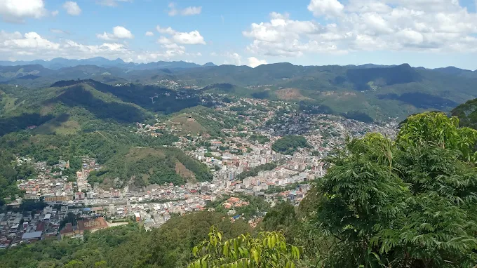

Natureza
Explore montanhas e belas paisagens.
Veja maisConheça lugares incríveis e aproveite as belezas da nossa cidade.
Veja maisNova Friburgo é um lugar cheio de natureza, belas paisagens e experiências para todos os visitantes.
Planeje seu passeio e descubra novos lugares para conhecer.
Explore as áreas verdes e aproveite momentos especiais ao ar livre.